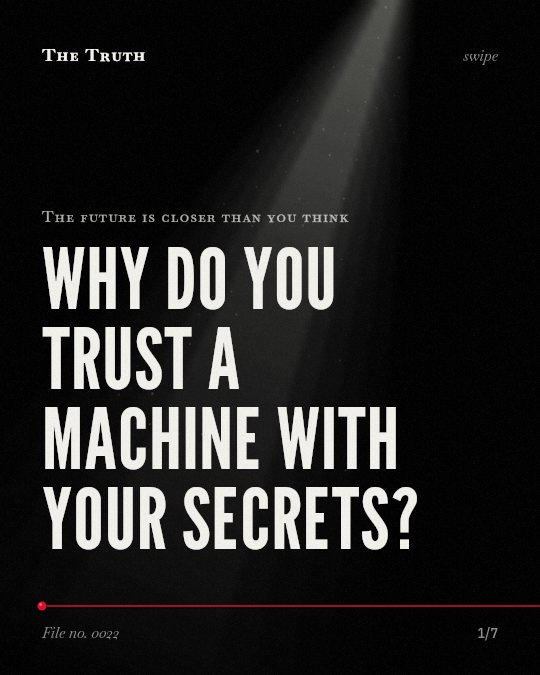
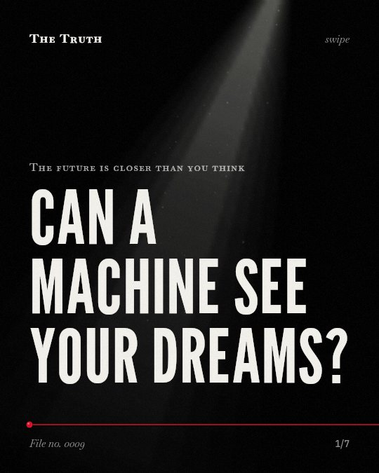

Skip to the text
The Truth
Library
Briefing
Method
Subject
The future
No. 0064
The future
Which jobs will AI actually touch?
No. 0055
The future
Is there a limit to how long you can live?
No. 0039
The future
You think experts have the edge. The data says otherwise.
No. 0030
The future
Can a machine hear your thoughts before you speak?

No. 0022
The future
Why do you trust a machine with your secrets?

No. 0009
The future
Can a machine see your dreams?